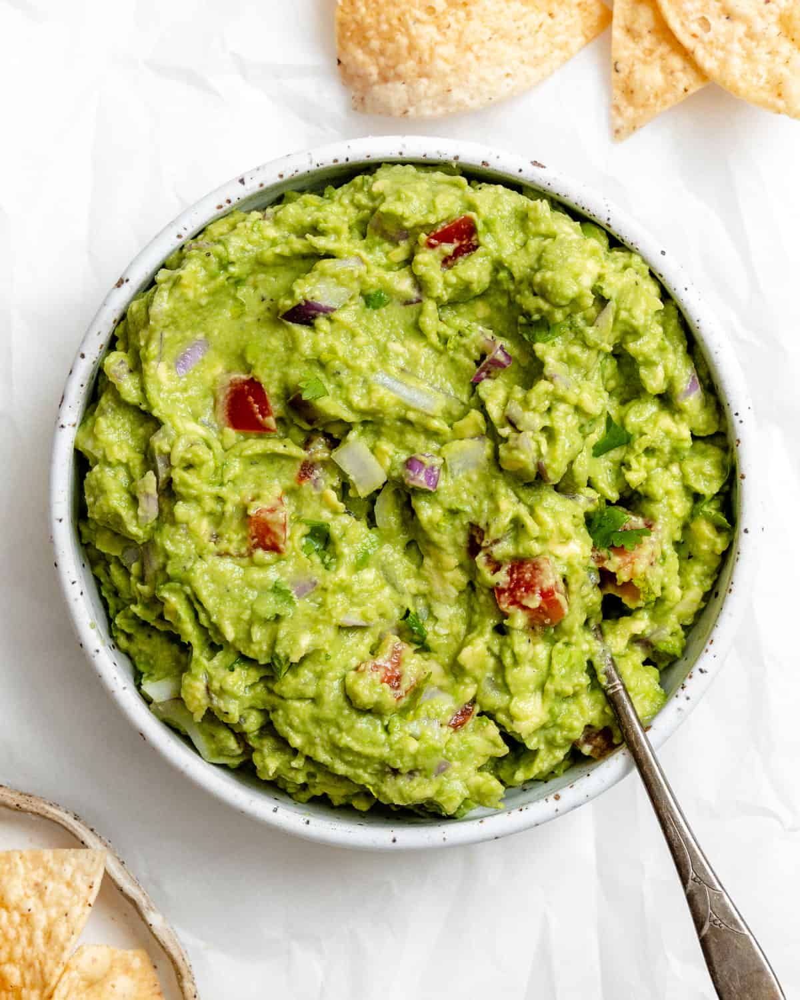
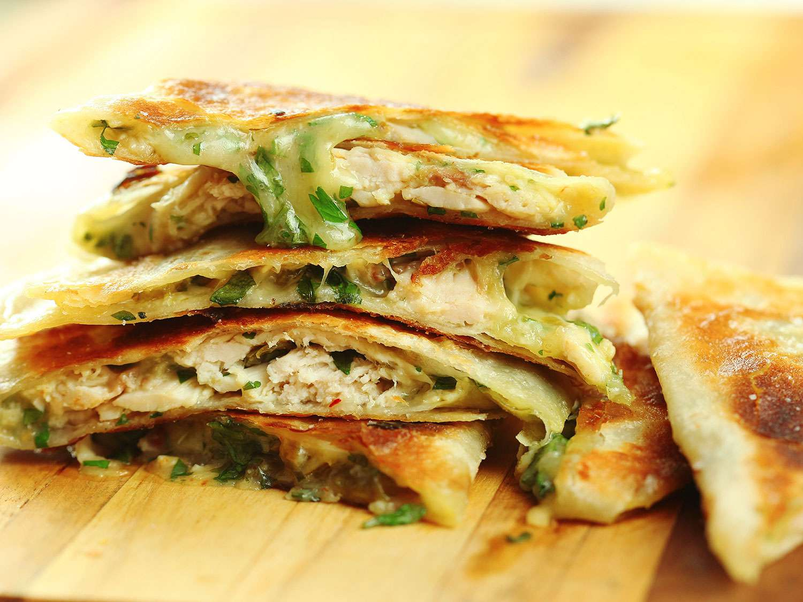
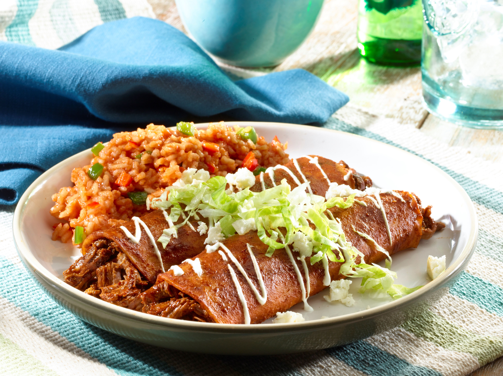

Mexican Cuisine

Appetizers
- Guacamole

Ingredients:
- 3 ripe avocados, halved, pitted and peeled
- Juice of 1 lime
- 1 tsp salt
- 1/2 onion, diced fine (about 1/2 cup)
- 2 Roma tomatoes, seeded and diced small (about 1/2 cup)
- 1 jalapeno, seeded and minced (about 1 tbsp)
- 2 Tbsp fresh cilantro, chopped fine
Steps:
- Scoop the avocado pulp from all 3 avocados into a medium bowl. Using a fork, mash the pulp until mostly smooth with some small chunks remaining.
- Add the lime juice and salt. Mix thoroughly using a rubber spatula to combine the lime juice and salt evenly throughout the mashed avocado.
- Add the diced onions, tomatoes, jalapeno and cilantro. Gently fold together using a rubber spatula until just combined.
- Taste a small spoonful and adjust seasoning as needed. Add more salt, about 1/4 tsp at a time, and lime juice, 1 tsp at a time, if desired.
- Transfer guacamole to a serving bowl. Refrigerate until ready to serve to maintain freshness. Serve chilled or at room temperature with tortilla chips.
- Quesadillas

Ingredients:
- 4 (10-inch) flour tortillas
- 1 cup shredded Monterey Jack or Oaxaca cheese (about 4 oz)
- 1/2 onion, thinly sliced (about 1/2 cup)
- 1 Roma tomato, seeded and diced small (about 1/4 cup)
- 1/2 bell pepper, thinly sliced (about 1/4 cup)
- Salsa and sour cream for serving
Steps:
- Heat a large nonstick skillet over medium heat.
- Place 1 tortilla in the skillet and sprinkle half of the cheese (about 1/2 cup) evenly over half of the tortilla.
- Top the cheese in a single layer with half of the onions, tomatoes, peppers.
- Sprinkle the remaining cheese evenly over the vegetables.
- Fold the empty half of the tortilla over the filling and gently press down.
- Cook for 2-3 minutes per side, flipping carefully with a spatula, until both sides are golden brown.
- Transfer quesadilla to a cutting board and let cool slightly. Repeat process for second quesadilla.
- Cut each quesadilla into 3-4 wedges. Serve wedges immediately with salsa and sour cream.
Main Courses
- Tacos Al Pastor

Ingredients:
- 1 lb pork shoulder, sliced into 1/4" thin strips
- 1 medium white onion, quartered
- 1 ripe pineapple, cored and sliced into 1/2" thick wedges
- 12 small corn tortillas
- Limes, fresh cilantro, salsa for serving
Steps:
- In a gallon size ziplock bag, marinate the pork strips in al pastor marinade for 8-12 hours refrigerated.
- Preheat grill or grill pan to high heat. Grill marinated pork strips, onion quarters and pineapple wedges in batches for 2-3 minutes per side until charred and cooked through. Transfer to a plate.
- Chop grilled pork and vegetables into 1/4" pieces. Season with salt.
- Warm tortillas on the grill for 20-30 seconds per side.
- Serve pork mixture on warm tortillas and top with a squeeze of lime juice, chopped cilantro and salsa.
- Enchiladas

Ingredients:
- 12 corn tortillas
- 1 lb 90% lean ground beef
- 1 small onion, diced (about 1/2 cup)
- 3 cloves garlic, minced
- 1 (28 oz) can enchilada sauce
- 2 cups shredded Mexican cheese blend (8 oz)
Steps:
- In a skillet over medium heat, cook ground beef and onion, breaking up meat with a spoon, until beef is browned and onion is tender, about 5 minutes. Add garlic and cook 1 minute more. Season with salt and pepper.
- Wrap tortillas in damp paper towels and microwave on high 30 seconds to soften. Place 1 tortilla on a work surface and spread 2 tbsp beef mixture down center. Roll up and place seam side down in a greased 9x13 baking dish. Repeat with remaining tortillas and beef mixture.
- Pour enchilada sauce over rolled tortillas. Sprinkle with cheese. Bake uncovered at 350°F for 15-20 minutes until hot and bubbly.
- Let enchiladas rest 5 minutes before serving.